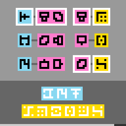

tr87
Turn glyph shapes in the answer bar; the level clears when it matches the question text rewritten by the legend.
6 levels · 7 rules · all levels replayed in Lean
Replay
The certified run that cleared every level, one action at a time. Beside each step: the rules of the model that explain it; they are also marked in the rule list below.

Explained by
Press Play or step to load the run. Keys, while the player is on screen: ← → step, Space play / pause. A click is circled; cells that changed are outlined.
How it plays
On the screen there are a line of question text, a legend book and an answer bar. Each rule in the legend is a pair of glyph strings: the key string on the left is replaced by the value string on the right. Rewrite the question text segment by segment according to the legend, sometimes following the colour chain through several rounds, until it is rewritten into the colour of the answer bar and exactly fills the answer bar; what is obtained is the answer. The left and right keys move the focus (the string boxed by the corner markers) to the next string or the previous string; the up and down keys turn the shape of every glyph in the focus string forward or backward by one step along a ring of seven. When the answer bar equals the answer shape cell by cell, the level is cleared; only the shape is looked at, not the orientation. In some levels the focus rests on the legend, and what must be rewritten is the legend itself. The counter bar at the very bottom eats up one cell every few steps.

Model
The final model: 6 object types and 7 rules. Each rule is a Python check against every recorded step; 4 of them are translated into Lean (the paper's per-game table). Code under a rule is the file of the same name in the agent's Lean project.
Object types
- Question text
promptThe given line of glyphs.Lean · Run.lean
-- Board.prompt : Run structure Run where color : Nat shapes : List Shape deriving Repr, DecidableEq, BEq - Answer bar
answerThe line of glyphs to be changed into the answer.Lean · Shape.lean
-- St.answer : List Shape abbrev Shape := Nat - Legend
legendRewrite rules: each key string on the left becomes the value string on the right.Lean · Legend.lean
-- St.legend : Legend abbrev Legend := List LegendRule - Focus
focusThe string boxed by the corner markers; it is the one that can change now.Lean · Focus.lean
-- St.focus : Focus abbrev Focus := Nat - Counter bar
hudThe bottom row; every few steps it eats one cell from the right end.Python only - Backdrop
backdropWhat remains of the screen after all glyphs and corner markers are removed.Python only
Rules
focus_stepLeft and right keys move the focus to the next or previous string, wrapping around.Python
from __future__ import annotations from derive.press import MOVE, moved_focus from rule._common import NOT_RESET, LEVEL_UP, is_reset, level_up, world … … … … … … … def scope_(prev, action, nxt, ctx=None): if is_reset(action): return NOT_RESET if level_up(ctx): return LEVEL_UP if action not in MOVE: … return None def assert_(prev, action, nxt, ctx=None): if scope_(prev, action, nxt, ctx): return "NA" w, v = world(prev), world(nxt) if w is None or v is None: return "NA" return "TRUE" if v.focus == moved_focus(w, MOVE[action]) else "FALSE"Lean · FocusStep.lean
import Obj.World def focusStep (w : World) (fwd : Bool) : Focus := if fwd then (w.st.focus + 1) % w.nStops else (w.st.focus + w.nStops - 1) % w.nStopsphase_stepUp and down keys turn every glyph shape in the focus string by one step.Python
from __future__ import annotations from derive.press import TURN, shift from rule._common import NOT_RESET, LEVEL_UP, is_reset, level_up, world … … … … … … … … def scope_(prev, action, nxt, ctx=None): if is_reset(action): return NOT_RESET if level_up(ctx): return LEVEL_UP if action not in TURN: … return None def assert_(prev, action, nxt, ctx=None): if scope_(prev, action, nxt, ctx): return "NA" w, v = world(prev), world(nxt) if w is None or v is None: return "NA" if v.focus != w.focus: return "FALSE" d = TURN[action] want = tuple(shift(s, d) for s in w.focused().shapes) return "TRUE" if v.focused().shapes == want else "FALSE"Lean · PhaseStep.lean
import Obj.World def shiftShape (s : Shape) (up : Bool) : Shape := s / 7 * 7 + (if up then (s % 7 + 1) % 7 else (s % 7 + 6) % 7) def modifyAt {α : Type} : List α → Nat → (α → α) → List α | [], _, _ => [] | x :: xs, 0, f => f x :: xs | x :: xs, n + 1, f => x :: modifyAt xs n f def turnRun (r : Run) (up : Bool) : Run := { r with shapes := r.shapes.map (fun s => shiftShape s up) } def turnRule (i : Focus) (up : Bool) (r : LegendRule) : LegendRule := if i % 2 == 0 then { r with key := turnRun r.key up } else { r with val := turnRun r.val up } def phaseStep (w : World) (up : Bool) : St := if w.board.legendMode then { w.st with legend := modifyAt w.st.legend (w.st.focus / 2) (turnRule w.st.focus up) } else { w.st with answer := modifyAt w.st.answer w.st.focus (fun s => shiftShape s up) }win_exactThe level ends exactly when the answer bar matches the answer shape cell by cell.Python
from __future__ import annotations from derive.press import after from derive.target import is_goal from rule._common import NOT_RESET, is_reset, level_up, world … … … … … … … … def scope_(prev, action, nxt, ctx=None): if is_reset(action): return NOT_RESET return None def assert_(prev, action, nxt, ctx=None): if scope_(prev, action, nxt, ctx): return "NA" w = world(prev) if w is None: return "NA" a = after(w, action) if a is None: return "FALSE" return "TRUE" if is_goal(a) == level_up(ctx) else "FALSE"Lean · Goal.lean
import Obj.World def rewriteAll (rules : List (List Shape × List Shape)) : Nat → List Shape → List (List Shape) | _, [] => [[]] | 0, _ :: _ => [] | fuel + 1, s :: ss => rules.flatMap (fun kv => if !kv.1.isEmpty && kv.1.isPrefixOf (s :: ss) then (rewriteAll rules fuel ((s :: ss).drop kv.1.length)).map (fun rest => kv.2 ++ rest) else []) def colorPairs (l : Legend) : List (Nat × Nat) := (l.map (fun r => (r.key.color, r.val.color))).eraseDups def groupRules (l : Legend) (p : Nat × Nat) : List (List Shape × List Shape) := (l.filter (fun r => r.key.color == p.1 && r.val.color == p.2)).map (fun r => (r.key.shapes, r.val.shapes)) def chainRound (l : Legend) (ac : Nat) (fr : List (Nat × List Shape)) : List (List Shape) × List (Nat × List Shape) := (fr.filterMap (fun cs => if cs.1 == ac then some cs.2 else none), fr.flatMap (fun cs => if cs.1 == ac then [] else (colorPairs l).flatMap (fun p => if p.1 == cs.1 then (rewriteAll (groupRules l p) cs.2.length cs.2).map (fun r => (p.2, r)) else []))) def chain (l : Legend) (ac : Nat) : Nat → List (Nat × List Shape) → List (List Shape) | 0, _ => [] | k + 1, fr => match chainRound l ac fr with | (out, nxt) => out ++ chain l ac k nxt def legendColors (l : Legend) : List Nat := ((colorPairs l).flatMap (fun p => [p.1, p.2])).eraseDups def targets (w : World) : List (List Shape) := chain w.st.legend w.board.ansColor ((legendColors w.st.legend).length + 1) [(w.board.prompt.color, w.board.prompt.shapes)] def isGoal (w : World) : Bool := (targets w).contains w.st.answerframe_restA press changes nothing else on the screen.Python
from __future__ import annotations from derive.press import MOVE, TURN from rule._common import NOT_RESET, LEVEL_UP, is_reset, level_up, world … … … … … … … def scope_(prev, action, nxt, ctx=None): if is_reset(action): return NOT_RESET if level_up(ctx): return LEVEL_UP return None def _others(w, skip): return tuple(s.glyphs for i, s in enumerate(w.stops()) if i != skip) def _layout(w): runs = [w.prompt, w.answer] + [r for x in w.legend.rules for r in (x.key, x.val)] return tuple(r.color for r in runs) def assert_(prev, action, nxt, ctx=None): if scope_(prev, action, nxt, ctx): return "NA" w, v = world(prev), world(nxt) if w is None or v is None: return "NA" if v.prompt != w.prompt or v.backdrop != w.backdrop or _layout(v) != _layout(w): return "FALSE" if v.focus.kind != w.focus.kind: return "FALSE" if action in MOVE: same = (v.answer == w.answer and v.legend == w.legend) return "TRUE" if same else "FALSE" if action in TURN: if v.focus != w.focus: return "FALSE" i = w.focus.index other_same = (v.legend == w.legend) if w.focus.kind == "answer" else (v.answer == w.answer) return "TRUE" if other_same and _others(v, i) == _others(w, i) else "FALSE" return "FALSE"Lean · FrameRest.lean
import Obj.World import Step theorem step_ok {w : World} {a : Act} {s : St} (h : step w a = .ok s) : s = after w a := by unfold step at h split at h · cases h · cases h; rfl theorem frameRest_move (w : World) (a : Act) (s : St) (ha : a = .a3 ∨ a = .a4) (h : step w a = .ok s) : s.answer = w.st.answer ∧ s.legend = w.st.legend := by rw [step_ok h] rcases ha with rfl | rfl <;> exact ⟨rfl, rfl⟩ theorem frameRest_turn_focus (w : World) (a : Act) (s : St) (ha : a = .a1 ∨ a = .a2) (h : step w a = .ok s) : s.focus = w.st.focus := by rw [step_ok h] rcases ha with rfl | rfl <;> simp only [after, phaseStep] <;> split <;> rfl theorem frameRest_turn_answer (w : World) (a : Act) (s : St) (ha : a = .a1 ∨ a = .a2) (hm : w.board.legendMode = false) (h : step w a = .ok s) : s.legend = w.st.legend ∧ ∀ i, i ≠ w.st.focus → s.answer[i]? = w.st.answer[i]? := by have ne : ∀ (l : List Shape) (n i : Nat) (f : Shape → Shape), i ≠ n → (modifyAt l n f)[i]? = l[i]? := by intro l induction l with | nil => intro n i f _; rfl | cons x xs ih => intro n i f hi cases n with | zero => cases i with | zero => exact absurd rfl hi | succ i => rfl | succ n => cases i with | zero => rfl | succ i => simp only [modifyAt, List.getElem?_cons_succ] exact ih n i f (fun e => hi (by rw [e])) rw [step_ok h] constructor · rcases ha with rfl | rfl <;> simp [after, phaseStep, hm] · intro i hi rcases ha with rfl | rfl <;> simp only [after, phaseStep, hm, Bool.false_eq_true, ↓reduceIte] <;> exact ne _ _ _ _ hi theorem frameRest_turn_legend (w : World) (a : Act) (s : St) (ha : a = .a1 ∨ a = .a2) (hm : w.board.legendMode = true) (h : step w a = .ok s) : s.answer = w.st.answer ∧ ∀ k, k ≠ w.st.focus / 2 → s.legend[k]? = w.st.legend[k]? := by have ne : ∀ (l : List LegendRule) (n i : Nat) (f : LegendRule → LegendRule), i ≠ n → (modifyAt l n f)[i]? = l[i]? := by intro l induction l with | nil => intro n i f _; rfl | cons x xs ih => intro n i f hi cases n with | zero => cases i with | zero => exact absurd rfl hi | succ i => rfl | succ n => cases i with | zero => rfl | succ i => simp only [modifyAt, List.getElem?_cons_succ] exact ih n i f (fun e => hi (by rw [e])) rw [step_ok h] constructor · rcases ha with rfl | rfl <;> simp [after, phaseStep, hm] · intro k hk rcases ha with rfl | rfl <;> simp only [after, phaseStep, hm, ↓reduceIte] <;> exact ne _ _ _ _ hk theorem frameRest_colors (w : World) (a : Act) (s : St) (h : step w a = .ok s) : s.legend.map (fun r => (r.key.color, r.val.color)) = w.st.legend.map (fun r => (r.key.color, r.val.color)) := by have keep : ∀ (l : List LegendRule) (n : Nat) (f : LegendRule → LegendRule), (∀ r, (f r).key.color = r.key.color ∧ (f r).val.color = r.val.color) → (modifyAt l n f).map (fun r => (r.key.color, r.val.color)) = l.map (fun r => (r.key.color, r.val.color)) := by intro l induction l with | nil => intro n f _; rfl | cons x xs ih => intro n f hf cases n with | zero => simp [modifyAt, (hf x).1, (hf x).2] | succ n => simp only [modifyAt, List.map_cons] rw [ih n f hf] have tr : ∀ (i : Nat) (up : Bool) (r : LegendRule), (turnRule i up r).key.color = r.key.color ∧ (turnRule i up r).val.color = r.val.color := by intro i up r unfold turnRule split <;> exact ⟨rfl, rfl⟩ rw [step_ok h] cases a <;> simp only [after] <;> try rfl all_goals simp only [phaseStep] split · exact keep _ _ _ (tr _ _) · rflhud_tickEach press either leaves the counter bar unchanged or eats one more cell.Python onlyPython
from __future__ import annotations from rule._common import NOT_RESET, LEVEL_UP, is_reset, level_up, world … … … … … … def scope_(prev, action, nxt, ctx=None): if is_reset(action): return NOT_RESET if level_up(ctx): return LEVEL_UP return None def assert_(prev, action, nxt, ctx=None): if scope_(prev, action, nxt, ctx): return "NA" w, v = world(prev), world(nxt) if w is None or v is None: return "NA" return "TRUE" if v.hud.filled - w.hud.filled in (0, 1) else "FALSE"level_startA new level puts the focus on the first stop and clears the counter bar.Python onlyPython
from __future__ import annotations from rule._common import NOT_RESET, SAME_LEVEL, is_reset, level_up, world … … … … … … def scope_(prev, action, nxt, ctx=None): if is_reset(action): return NOT_RESET if not level_up(ctx): return SAME_LEVEL return None def assert_(prev, action, nxt, ctx=None): if scope_(prev, action, nxt, ctx): return "NA" v = world(nxt) if v is None: return "NA" return "TRUE" if v.focus.index == 0 and v.hud.filled == 0 else "FALSE"orient_keptUp and down keys do not change the orientation of any cell.Python onlyPython
from __future__ import annotations from derive.orient import candidates from derive.press import TURN from rule._common import NOT_RESET, LEVEL_UP, is_reset, level_up, world … … … … … … def scope_(prev, action, nxt, ctx=None): if is_reset(action): return NOT_RESET if level_up(ctx): return LEVEL_UP if action not in TURN: … return None def assert_(prev, action, nxt, ctx=None): if scope_(prev, action, nxt, ctx): return "NA" w, v = world(prev), world(nxt) if w is None or v is None: return "NA" if v.focus != w.focus: return "FALSE" d = TURN[action] for a, b in zip(w.focused().glyphs, v.focused().glyphs): if b.bits not in candidates(a.bits, d): return "FALSE" return "TRUE"
Code is shown with comments and the agent's notes removed; the files as written are in the archive under Check it yourself.
Proof
For every level, Lean starts from the level's first screen, applies the model's rules to the certified actions, and checks that every computed state agrees with the recorded frame on the components the model represents, and that the last one wins. Each theorem is closed by the Lean kernel and is a statement about the learned model.
Every level can be won
theorem L0_winnable : Winnable (L0_start : World) := …theorem L1_winnable : Winnable (L1_start : World) := …theorem L2_winnable : Winnable (L2_start : World) := …theorem L3_winnable : Winnable (L3_start : World) := …theorem L4_winnable : Winnable (L4_start : World) := …theorem L5_winnable : Winnable (L5_start : World) := …What cannot be won under the model
theorem noTarget_no_win : ∀ (w : World) (a : Act), NoTarget w → step w a ≠ .won := …theorem unsolvable_noTarget (w : World) (h : NoTarget w) : Unsolvable w := …theorem famLock_no_win : ∀ (w : World) (a : Act), FamLock w → step w a ≠ .won := …theorem unsolvable_famLock (w : World) (h : FamLock w) : Unsolvable w := …theorem scene1_unsolvable : Unsolvable (scene1 : World) := …theorem scene2_unsolvable : Unsolvable (scene2 : World) := …Statements only; the proofs and the full Lean project are in the archive, with the steps to re-run them, under Check it yourself.
Check it yourself
Everything on this page comes from files you can download and check. The archive holds the agent's files: the recorded run, the concept book, the concept sources, the Lean project and the sealed model file, plus the record of our kernel check.
Download tr87.zip 0.2 MB · 39 files
Re-run the proof
Before you start: our run of this check took 38 s and 2.0 GB of memory at its peak (2026-10-24).
- Download tr87.zip and unpack it. The model and its theorems are in
archive/tr87-20260907/formal/Game.lean. Before changing it, check that its SHA-256 isefc52d00cdb8da9c10377b6a6324a28313cabac3cce5f914719812c13cebcfc1 - Install Lean with elan, then the version named in the archive's
lean-toolchain:elan toolchain install leanprover/lean4:v4.34.0 - Copy the model file to
Check.leanand append these two lines to the copy:#print axioms consistent #print axioms faithful - In the folder that holds
Check.lean, run:lean +leanprover/lean4:v4.34.0 -M60000 Check.lean - Lean should finish without errors and print:
The first line is printed by the file itself: for each rule, how many recorded transitions meet its condition.GUARD_HITS cursor_lr=69,cursor_shape=421,focus_move=115,glyph_local=306,only_focus=422,shape_step=306,budget_bar=421,win_rule=262,win_prev=262 'consistent' depends on axioms: [propext] 'faithful' depends on axioms: [propext]
What a pass establishes
consistent: for every recorded transition, as read by the agent's parser and with duplicates removed, every rule whose condition holds also has its effect hold. faithful: the certified run, recomputed step by step from the first screen of each level, matches the record and ends in a win. Axioms used: propext, all among Lean's standard ones.
What it does not establish: that the parser reads the screens correctly (that step runs in Python, outside Lean), or that a rule whose condition never occurs in the record is right. The Python file that produced the readings inside the model file is in the archive at meta/repair-20260928/lib/tr87-20260907/_lib.py.